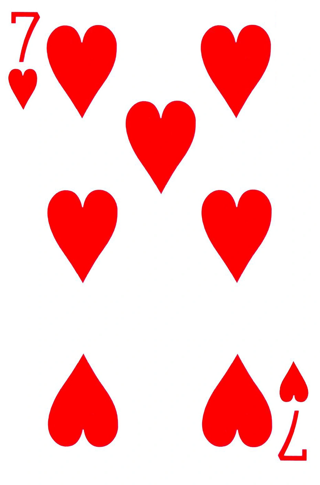
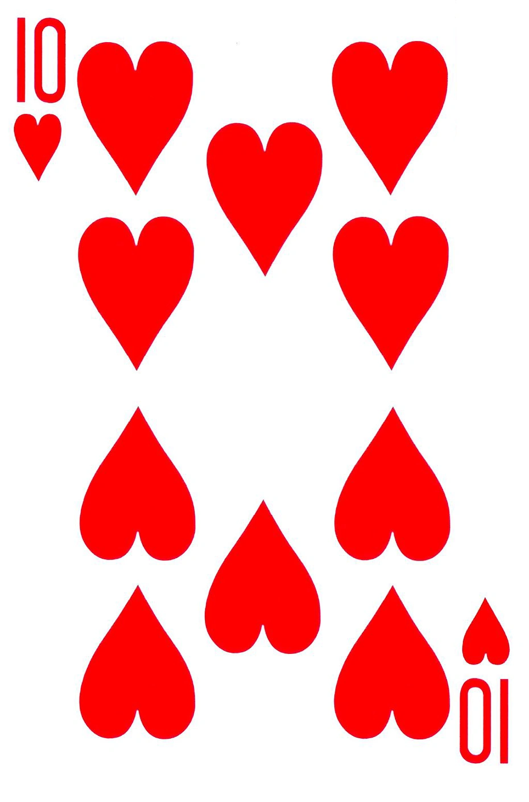
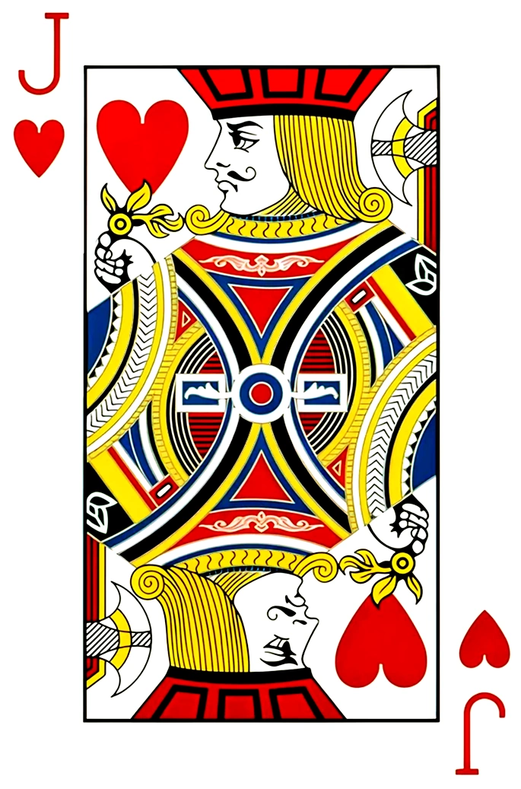
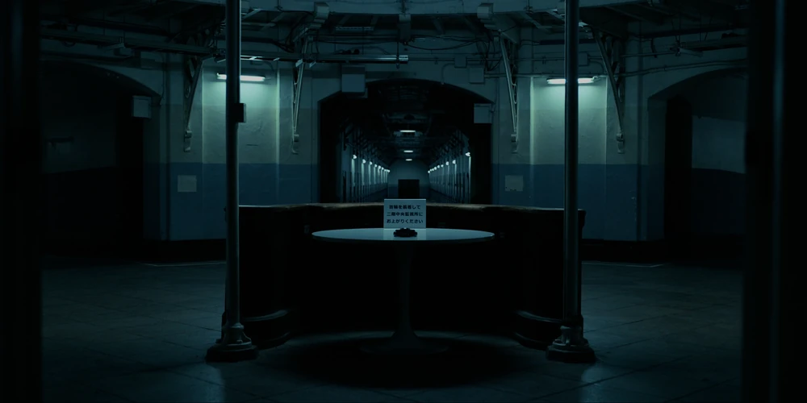
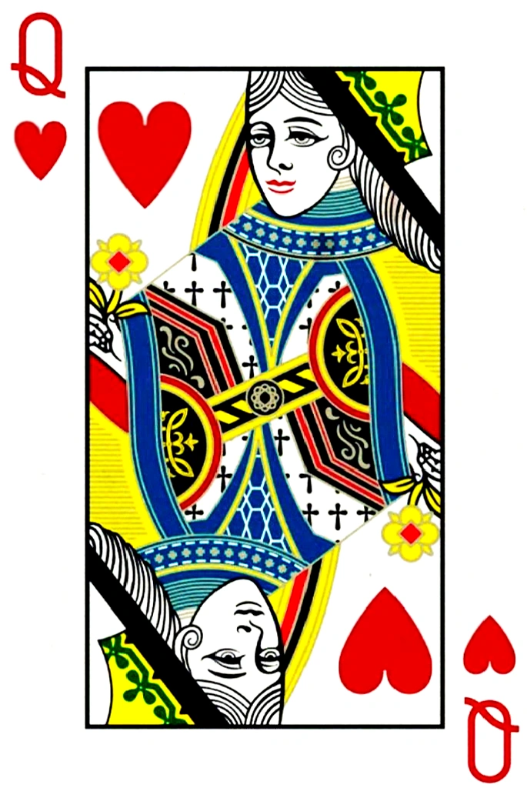
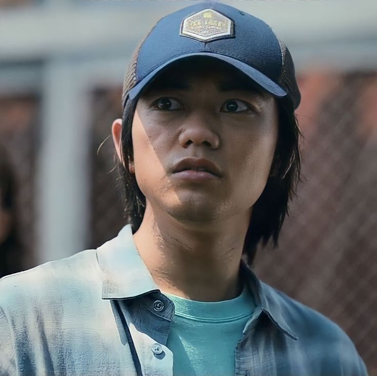
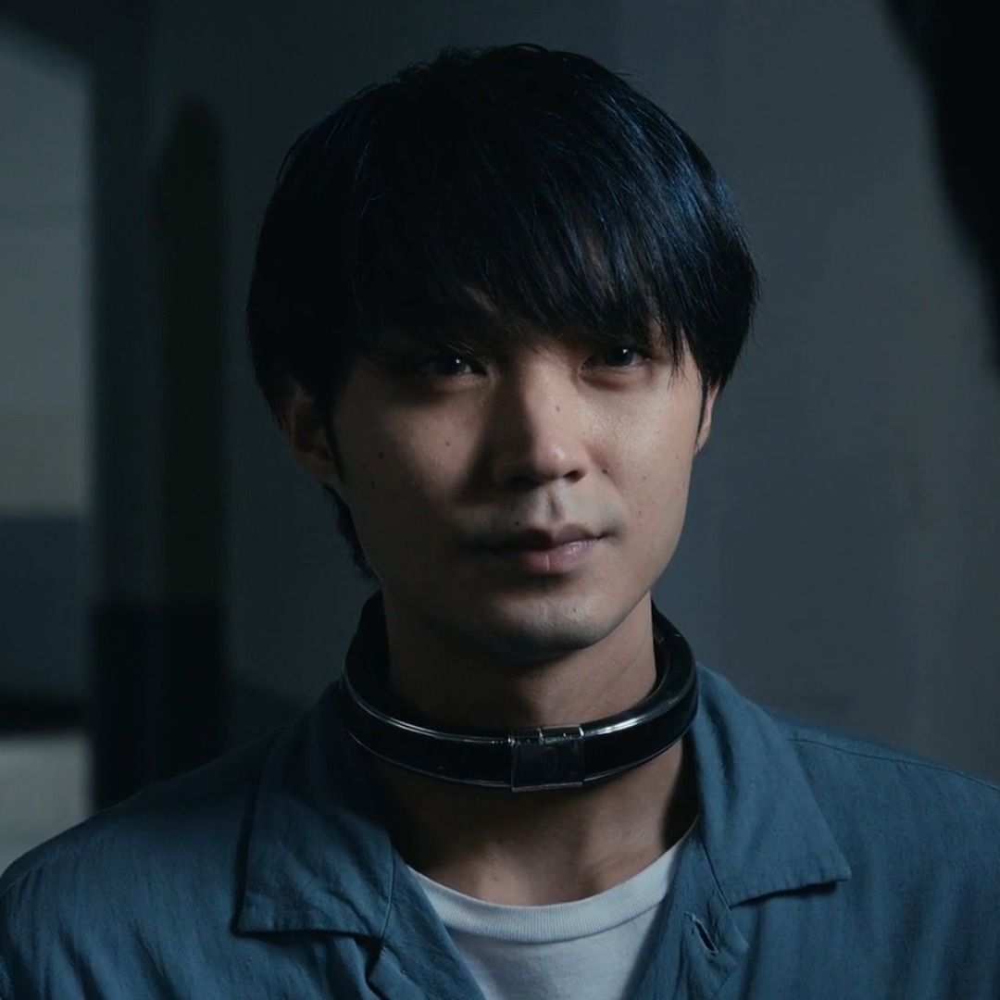
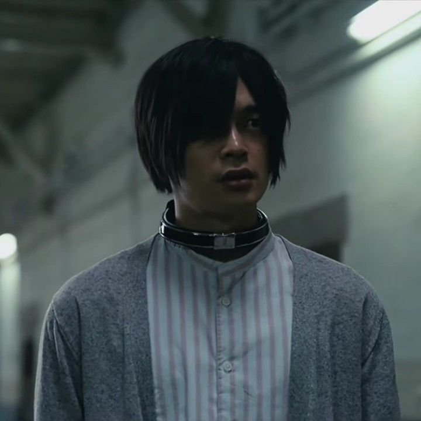

In this game, one participant is randomly chosen as the wolf (seeker), while the other players are lambs (hiders). Players are allowed to take any of the weapons/tools layed out on the table during the game. At the end of the game, only the wolf will survive.
The game venue is at the Shinjuku Natural Botanical Garden. This is a large greenhouse filled with plant life, trees, bushes and paths. The plants and space creates many hiding spots that players can use to their advantage during the game.

In this game, all players present at the Beach have to find the "witch" who stabbed Momoka. In order to finish the game, they have to burn the witch in the Fire of Judgement.
The game venue is at the Seaside Paradise Resort, also known as the Beach. This is a hotel occupied by the Beach group's members, led by Takeru Danma (Hatter). It is meant to be a safe haven where all players work together to collect all the cards.

In this game, players have to guess the symbol at the back of their collar at the end of each round. They are allowed to use any strategy to guess correctly, but they are not allowed to look at their symbol themselves. Players are allowed to roam around freely around the venue and at the end of the round, they must return to their cells and guess their symbol. If they guess correctly, they move on to the next round. If their guess is incorrect, their collar will explode and the player will be eliminated. The game has no time limit, the main goal is to eliminate the Jack of Hearts. Once the Jack is eliminated, all surviving players are free to go.
The game venue is in the Teio Prison. This is a large dimly lit, multi-floor prison with corridors, cells, and a central guardroom.


In this game, the players simply have to finish three sets of regular croquet. There are no special rules. The players lose if they decide to stop mid-game.
The game venue is a rooftop garden, high above the city. It is surrounded by neatly trimmed bushes with white flowers. There is a flat croquet game arena in the middle, and a small tea party set up at the back of the venue.

Click on any character to reveal their fate.






